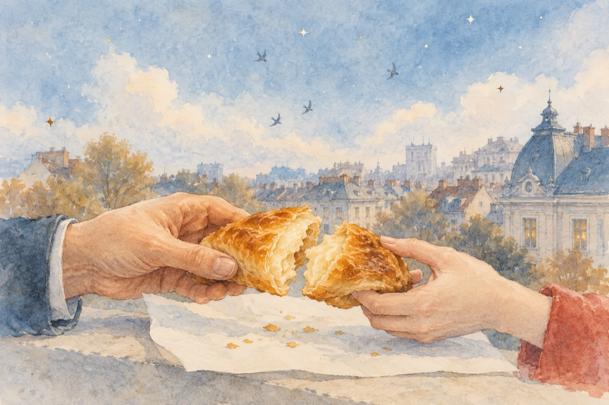

La merdenele
În Piața Amzei
Motto:
În amintirea marelui poet Nichita Stănescu
Pe-atunci în colț nu exista gogoșerie
Și-a trebuit să traverseze pân’la ea
Acolo unde după cum se știe
În București e cea mai bună merdenea.
Să trăiți, maestre, i-am zis pe apucate,
El m-a privit cu cerul lui de stele,
„M-ai onorat ’nălțate împărate”,
Ia gustă și mata din merdenele.
Și am mâncat cu „el” în parte.
„Le am pe toate aicea la doi pași
Acolo unde-mi am zălogul
Sub grija mare-a unor îngerași
Ce-mi vor păstra eternității locul”.
Așa l-am cunoscut eu pe Nichita
Eu pământeanul de ocazie
Probabil că așa mi-a fost ursita
Și nu-i deloc o fantezie.
Dar am gustat și gust mereu
Din marea-i și bogata-i poezie
E visul meu, norocul meu
Lăsată nouă drept ca moștenire.
De-acel ce nu îl vom uita!
Pe marele poet Nichita!
Vasile Groza